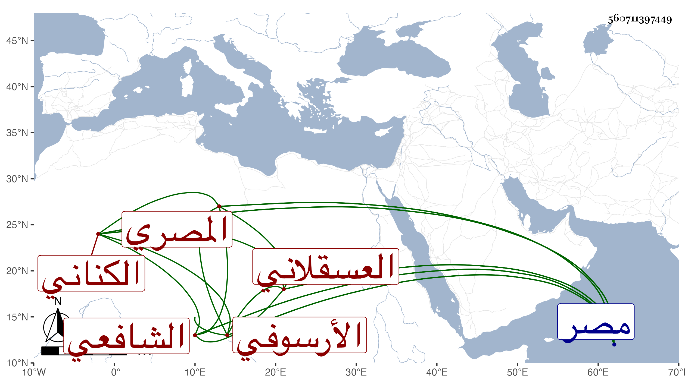

0902Sakhawi.DawLamic.ITO20230111-ara1.EIS1600.560711397449
Biography ID: 560711397449
30
محمد بن عبد الرحمن بن محمد بن محمد بن محمد بن محمد بن محمد بن محمد بن محمد بن محمد بن محمد التاج الكناني العسقلاني الأرسوفي الأصل المصري الشافعي . ولد تقريبا سنة خمس وتسعين وسبعمائة بمصر ونشأ بها فحفظ القرآن والعمدة والتنبيه والملحة وغيرها وعرض على العز محمد بن جماعة وغيره وأجاز له العز والشرف ابن الكويك واشتغل في الفقه على المجد البرماوي والسراج الدموهي والزكي الميدومي وغيرهم . وحج وتكسب بالشهادة وتعاني النظم واشتهر في ناحيته بإجادته مع فضيلته . لقيته بمصر فكتبت عنه قوله :
| بمبسمه مر النسيم غدية | وعاد وفي أرجائه الند والندى |
| وقال أما لولاه ما كنت ذا شذى | ولولاي ما كان الرضاب مبردا |
مات في ربيع الأول سنة ست وستين .
